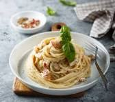

Home
Spaghetti Carbonara

Description
Spaghetti Carbonara is a traditional Roman pasta dish known for its creamy
texture and rich flavor. It’s made with eggs, cheese, pancetta or bacon,
and freshly ground black pepper. Despite its creamy taste, it contains no
cream — the smooth texture comes from emulsifying eggs and cheese with hot
pasta water.
The result is a comforting, flavorful dish that’s both simple and elegant.
Perfect for a quick dinner or a special occasion, Carbonara captures the
essence of Italian comfort food.
Ingredients
- 200g spaghetti
- 100g pancetta or bacon, diced
- 2 large eggs
- 1/2 cup grated Parmesan cheese
- 1/2 cup grated Pecorino Romano cheese
- 2 cloves garlic, minced
- Salt and freshly ground black pepper
- 2 tablespoons olive oil
Steps for preparation
Cook the Pasta
- Boil water with salt and cook spaghetti until al dente.
- Reserve 1/2 cup of pasta water, then drain.
Prepare the Sauce
-
In a bowl, whisk together eggs, Parmesan, and Pecorino cheese until
smooth.
- Season with a generous amount of black pepper.
Cook Pancetta
- Heat olive oil in a pan and fry pancetta until crispy.
- Add minced garlic and cook briefly, then remove from heat.
Combine Everything
- Add the hot pasta to the pan with pancetta.
-
Remove from heat and quickly pour in the egg-cheese mixture, stirring
rapidly to create a creamy sauce (do not scramble the eggs).
- Add a little pasta water if needed for a smooth texture.
Serve
- Garnish with extra cheese and black pepper.
- Serve immediately while hot.